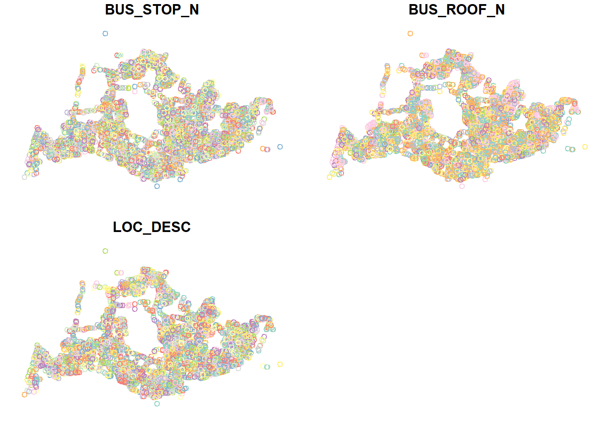
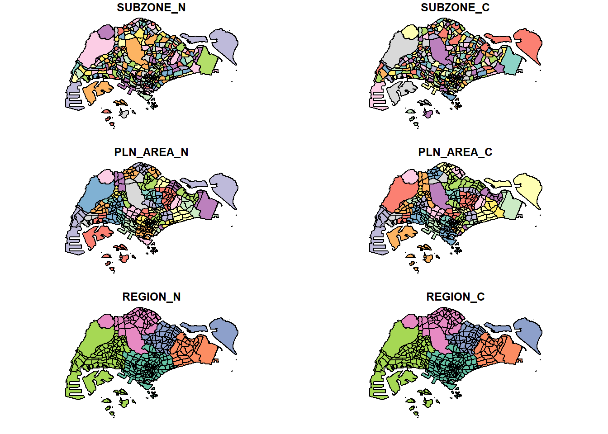
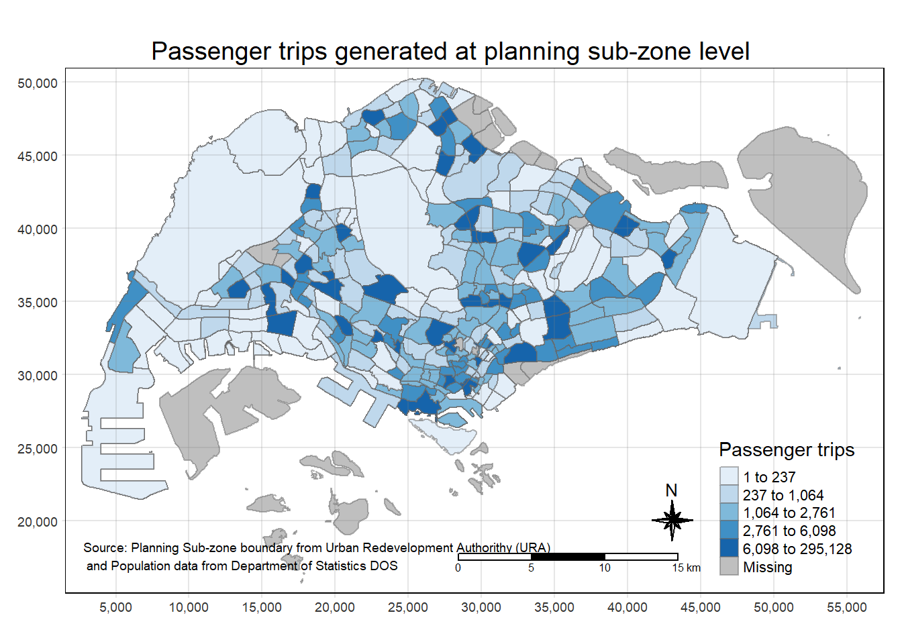

pacman::p_load(sf, tmap, mapview, tidyverse)In-class Ex 1
Getting Started
Using pacman to load the required packages.
tmap - for thematic mapping
sf - for geospatial data handling
tidyverse - for non-spatial data handling
Importing kml file
Using the data from LTA on the Location of the Bus Stops in Singapore
Available at: https://datamall.lta.gov.sg/
Current data is based on Jul 23 (updated quarterly).
busstops = st_read(dsn = "data/geospatial",
layer = "BusStop") %>%
st_transform (crs = 3414)Reading layer `BusStop' from data source
`C:\zjjgithubb\ISSS624\InClassEx\Ex01\data\geospatial' using driver `ESRI Shapefile'
Simple feature collection with 5161 features and 3 fields
Geometry type: POINT
Dimension: XY
Bounding box: xmin: 3970.122 ymin: 26482.1 xmax: 48284.56 ymax: 52983.82
Projected CRS: SVY21plot(busstops)
Bus Origin and Destination Data
We will also import the Passengers, Origin and Destination data by using the readr package and read_csv.
odbus_aug <- read_csv("data/aspatial/origin_destination_bus_202308.csv")
odbus_sep <- read_csv("data/aspatial/origin_destination_bus_202309.csv")
odbus_oct <- read_csv("data/aspatial/origin_destination_bus_202310.csv")
head(odbus_aug, n=5)# A tibble: 5 x 7
YEAR_MONTH DAY_TYPE TIME_PER_HOUR PT_TYPE ORIGIN_PT_CODE DESTINATION_PT_CODE
<chr> <chr> <dbl> <chr> <chr> <chr>
1 2023-08 WEEKDAY 16 BUS 04168 10051
2 2023-08 WEEKENDS/~ 16 BUS 04168 10051
3 2023-08 WEEKENDS/~ 14 BUS 80119 90079
4 2023-08 WEEKDAY 14 BUS 80119 90079
5 2023-08 WEEKENDS/~ 17 BUS 44069 17229
# i 1 more variable: TOTAL_TRIPS <dbl>We need to convert the Origin_PT_Code data into factor to allow R to manipulate the data more easily.
odbus_aug$ORIGIN_PT_CODE <- as.factor(odbus_aug$ORIGIN_PT_CODE)
odbus_aug$DESTINATION_PT_CODE <- as.factor(odbus_aug$DESTINATION_PT_CODE)Filter the time between 7 am to 9 am (just before 10am) on Weekdays, Group by the Origin Bus Stops.
origtrip_7_9 <- odbus_aug %>%
filter(DAY_TYPE == "WEEKDAY") %>%
filter(TIME_PER_HOUR >= 7 &
TIME_PER_HOUR <= 9) %>%
group_by(ORIGIN_PT_CODE) %>%
summarise (TRIPS = sum(TOTAL_TRIPS))Map Planning Sub-zone 2019
We will also import that Map Planning Sub-zone 2019 data. Need to transform the coordinates to 3414, which will be in metres instead of decimal/degrees.
mpsz19 = st_read(dsn = "data/geospatial",
layer = "MPSZ-2019") %>%
st_transform (crs = 3414)Reading layer `MPSZ-2019' from data source
`C:\zjjgithubb\ISSS624\InClassEx\Ex01\data\geospatial' using driver `ESRI Shapefile'
Simple feature collection with 332 features and 6 fields
Geometry type: MULTIPOLYGON
Dimension: XY
Bounding box: xmin: 103.6057 ymin: 1.158699 xmax: 104.0885 ymax: 1.470775
Geodetic CRS: WGS 84head(mpsz19, n=5)Simple feature collection with 5 features and 6 fields
Geometry type: MULTIPOLYGON
Dimension: XY
Bounding box: xmin: 8012.578 ymin: 22108.68 xmax: 33316.59 ymax: 31087.61
Projected CRS: SVY21 / Singapore TM
SUBZONE_N SUBZONE_C PLN_AREA_N PLN_AREA_C REGION_N
1 MARINA EAST MESZ01 MARINA EAST ME CENTRAL REGION
2 INSTITUTION HILL RVSZ05 RIVER VALLEY RV CENTRAL REGION
3 ROBERTSON QUAY SRSZ01 SINGAPORE RIVER SR CENTRAL REGION
4 JURONG ISLAND AND BUKOM WISZ01 WESTERN ISLANDS WI WEST REGION
5 FORT CANNING MUSZ02 MUSEUM MU CENTRAL REGION
REGION_C geometry
1 CR MULTIPOLYGON (((33222.98 29...
2 CR MULTIPOLYGON (((28481.45 30...
3 CR MULTIPOLYGON (((28087.34 30...
4 WR MULTIPOLYGON (((14557.7 304...
5 CR MULTIPOLYGON (((29542.53 31...plot(mpsz19)
Joining the data of the Bus Stop Code, Location and which Planning Sub-zone
Using sf_intersection to join the data.
busstop_mpsz <- st_intersection(busstops, mpsz19) %>%
select(BUS_STOP_N, SUBZONE_C) %>%
st_drop_geometry()st_intersection()is used to perform point and polygon overly and the output will be in point sf object.select()of dplyr package is then use to retain only BUS_STOP_N and SUBZONE_C in the busstop_mpsz sf data frame.five bus stops are excluded in the resultant data frame because they are outside of Singapore boundary.
Save the output into rds format.
write_rds(busstop_mpsz, "data/rds/busstop_mpsz.csv") Append the data
origin_data <- left_join(origtrip_7_9 , busstop_mpsz,
by = c("ORIGIN_PT_CODE" = "BUS_STOP_N")) %>%
rename(ORIGIN_BS = ORIGIN_PT_CODE,
ORIGIN_SZ = SUBZONE_C)To check for duplicating records:
duplicate <- origin_data %>%
group_by_all() %>%
filter(n()>1) %>%
ungroup()If there are, can use the following to retain the unique records:
origin_data <- unique(origin_data)To check if the duplicating records are fully addressed:
mpsz_origtrip <- left_join(mpsz19,
origin_data,
by = c("SUBZONE_C" = "ORIGIN_SZ"))Visualisation of the Data
Using tmap
tm_shape(mpsz_origtrip)+
tm_fill("TRIPS",
style = "quantile",
palette = "Blues",
title = "Passenger trips") +
tm_layout(main.title = "Passenger trips generated at planning sub-zone level",
main.title.position = "center",
main.title.size = 1.2,
legend.height = 0.45,
legend.width = 0.35,
frame = TRUE) +
tm_borders(alpha = 0.5) +
tm_compass(type="8star", size = 2) +
tm_scale_bar() +
tm_grid(alpha =0.2) +
tm_credits("Source: Planning Sub-zone boundary from Urban Redevelopment Authorithy (URA)\n and Population data from Department of Statistics DOS",
position = c("left", "bottom"))